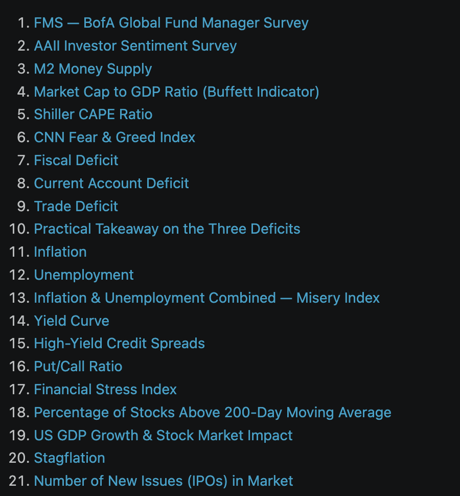

Market Indicators
Raw notes used to play around with AI models — weekend reading material on markets. A tour through fund-manager surveys, sentiment gauges, valuation ratios and the three deficits.

Notes and long-form writing, mirrored from my Medium.
Raw notes used to play around with AI models — weekend reading material on markets. A tour through fund-manager surveys, sentiment gauges, valuation ratios and the three deficits.

An Attempt to Know It All When we read about AI topics, we realise we will never know them all. It is just overwhelming. This blog is just one of my many attempts to…

A Developer’s Fresh Take on Modules, React, Bundlers and Micro-frontends Browser’s progress over the years 25–30 years ago, browser just opens HTML and reloads entire page for any change… like a document viewer. But…

Developer Tools, MCP, RAG, and Agentic Patterns with Claude Code Slash Commands, Subagents, Hooks,RAG, MCP and etc Custom Slash Commands /review-component src/components/Dashboard /check-security /explain-flow fetching bank portfolio data These commands are defined in .claude/commands/…

Layers, Neurons, Activations, and Forward Propagation Computational model inspired by the human brain It will be hard to put everything into one single blog. Just want to keep it simple for quick reference. For…

Logistic Regression & Classification From Sigmoid Functions to Decision Boundaries Classification is about predicting categories or labels, not continuous values. Instead of predicting a number like price (regression), you predict which class something belongs…
Start with Core. What is core? There are genius people talk about single core , dual core, quad core and multi-core. Let start from here, Single Core Only one core was responsible for all…

Vectorization, Feature Scaling, and Polynomial Regression Read the previous blog before start this Multiple feature When you started having multiple features, your function will become bigger. For example, To predict house price, we can…

Linear Regression & Gradient Descent The Foundation of Supervised Machine Learning As I progress through the Supervised Machine Learning course by Andrew Ng on Coursera, I wanted to document my understanding of one of…

Essential Frameworks, Libraries, and Data Formats Explained in Two Lines PyTorch Open-source deep learning framework developed by Meta. It is widely used for machine learning (ML) and deep learning (DL) applications, such as computer…